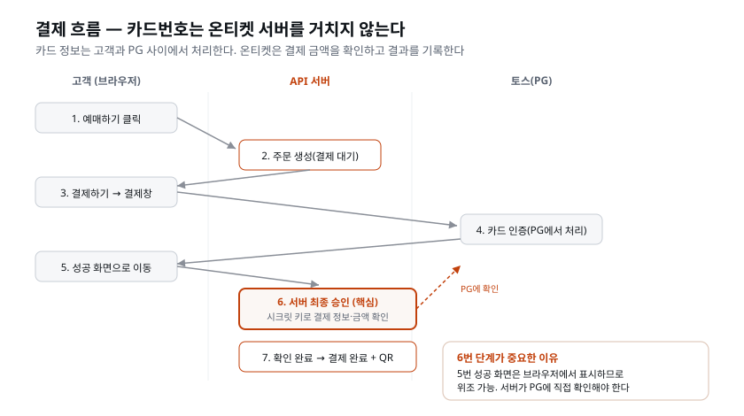

이 장이 끝나면: 온티켓에서 테스트 모드 결제가 동작한다 — 예매하고 결제 화면에서 결제하기를 누르면 결제창이 뜨고, 테스트 결제가 성공하면 주문이 '결제완료'가 되며 QR 티켓이 발급된다. 연동 코드는 AI가 짠다. 사람의 일은 네 가지 안전장치를 확인하는 것이다. 이 장에서는 네 가지 안전장치가 필요한 이유와 확인 방법을 익힌다.
"결제 기능"이라는 말에 긴장부터 되는 것이 정상이다. 남의 돈과 카드 정보를 다루는 일 아닌가. 그런데 현대 웹 결제의 구조를 알면 긴장의 절반은 풀린다.
고객의 카드번호는 우리 서비스를 거치지 않는다. 결제 화면 자체를 결제 전문 회사(PG)가 띄우고, 카드 정보는 고객과 PG 사이에서만 오간다. 우리가 받는 것은 "결제가 성공했다/실패했다"는 결과뿐이다. 카드번호를 저장하고 지키는 무거운 책임은 PG의 일이고, 그래서 그들이 수수료를 받는다.
이 문장이 왜 그렇게 중요한지 조금 더 파 보자. 카드번호·유효기간·CVC(카드 뒷면 세 자리)는 그 자체로 돈을 움직일 수 있는 정보다. 이런 정보를 서버에 저장하거나, 심지어 잠깐 지나가게만 해도, 그 서버는 전 세계 카드업계가 정한 PCI DSS라는 아주 엄격한 보안 규격의 적용 대상이 된다. PCI DSS(Payment Card Industry Data Security Standard, 카드 산업 데이터 보안 표준)는 카드 정보를 다루는 시스템이 지켜야 하는 수백 개 항목의 규칙 묶음인데, 방화벽 구성부터 접근 기록, 정기 취약점 점검, 외부 감사까지 요구한다. 3일 만에 서비스를 띄우려는 우리가 감당할 수 있는 일이 아니다.
그래서 현대 웹 결제는 아예 카드번호가 우리 서버 근처에도 오지 않도록 설계를 바꿔 버렸다. 카드번호를 입력받는 화면(결제창)을 우리가 그리지 않고 PG가 그린다. 고객이 카드번호를 치면 그 글자들은 고객 브라우저에서 곧장 PG로 날아가고, 우리 코드는 그 값을 한 번도 보지 못한다. 우리에게 돌아오는 것은 카드번호가 아니라 "이 주문은 결제됐다"라는 영수증 번호(결제 키) 하나뿐이다. 카드번호를 안 가지고 있으면 유출될 카드번호도 없다 — 이것이 가장 근본적인 보안이다. 지키기 어려운 것은 애초에 갖지 않는 것이 가장 안전하다.
비유하면 이렇다. 우리는 공연장 매표소를 직접 운영하지만, 현금 계산대는 은행이 파견한 직원(PG)이 맡는다. 고객은 그 직원에게 카드를 내밀고, 우리 매표소 직원은 "계산 끝났습니다"라는 확인증만 건네받아 티켓을 내준다. 카드는 우리 손을 거치지 않는다. 우리 일은 표를 정확히 내주는 것이지 돈을 세는 것이 아니다.
우리 몫으로 남는 책임은 명확히 두 가지다 — 금액이 맞는지 확인하는 것, 그리고 결과를 정확하게 기록하는 것. 이 장의 안전장치 네 가지가 정확히 이 책임을 지킨다.
[짚고 가기] "결제를 붙인다"는 말에 지레 겁먹기 쉽다. 하지만 이 장에서 딱 하나만 붙들면 된다 — "우리는 카드번호를 안 만진다". 세 상자를 머릿속에 그려 두면 편하다 — [고객] — [PG(토스)] — [우리 서버]. 카드번호 화살표는 왼쪽 두 상자 사이에만 오가고, 우리 서버로는 "결제됐음"이라는 결과 화살표만 들어온다. 카드번호가 이 선(우리 서버)을 넘어온다면 그건 잘못 만든 것이다. 이 그림을 잡아 두면, 나중에 네 번째 확인(카드정보 미수신)이 왜 필요한지 자연히 이해된다.
결제 연동은 전 세계 수십만 서비스가 똑같이 반복해 온 표준 패턴이다. 문서가 잘 되어 있고, 흐름이 정형화되어 있다 — AI가 가장 잘 짜는 종류의 코드라는 뜻이다. 그래서 이 장의 시간 배분이 특이하다. 코드 작성(AI)은 금방이고, 사람의 시간은 흐름의 이해와 안전 확인에 쓴다.
왜 결제 코드가 유독 AI에게 잘 맞는지 짚어 두자. 결제는 사람마다 창의적으로 다르게 짜는 영역이 아니다. 오히려 PG가 "이 순서대로, 이 함수를 이렇게 불러라"라고 정해 놓은 길을 그대로 따라가야 하는 영역이다. 토스페이먼츠 문서에는 결제창을 띄우는 코드, 승인을 요청하는 코드가 거의 복사해 쓸 수 있는 형태로 예제까지 제공된다. 이렇게 정답이 문서에 이미 있는 종류의 일은 AI가 실수 없이 옮기는 데 특히 강하다. 반대로 "지금 이 결정을 내려도 되는가"(예: 라이브 키를 써도 되는가) 같은 판단은 문서에 없다. 그래서 코드는 AI에게 넘기고, 판단은 사람이 쥔다.
미리 짚어 둘 현실이 하나 있다. 이 장에서는 테스트 모드로 끝까지 간다. 실제 돈을 받는 것은 코드 문제가 아니라 절차 문제다 — 사업자등록, PG사와의 계약, 상점 심사. 보통 며칠에서 몇 주가 걸린다. 오대표에게 보고할 사항이기도 하다: "결제 기능은 완성, 실제 결제 대금 수납은 PG 심사 통과 후." 많은 초보 창업자가 이 순서를 몰라 오픈 직전에 발을 구른다.
조금 더 구체적으로, 실제 돈을 받으려면 대략 이런 절차를 밟는다. ① 사업자등록증이 있어야 한다(개인사업자든 법인이든). ② PG사에 가맹점(상점) 가입을 신청한다. ③ PG사와 정산 계약을 맺는다 — 수수료율, 정산 주기(보통 결제 후 며칠 뒤에 우리 통장으로 들어오는지)를 정한다. ④ PG사가 우리 사업이 정상적인지, 판매하는 것이 결제 가능한 상품인지 심사한다. 이 심사를 통과해야 비로소 라이브 키가 발급된다. 우리가 이 장에서 쓰는 테스트 키는 이 모든 절차 없이 즉시 나오지만, 라이브 키는 그렇지 않다.
승승장구 입장에서 이 순서를 뒤집으면 사고가 난다. "코드가 다 됐으니 내일 오픈하자"라고 오대표가 말했을 때, "코드는 됐지만 PG 심사가 안 끝나서 실제 카드 결제는 아직 안 됩니다"라고 답할 수 있어야 한다. 그래서 개발을 시작할 때 심사도 함께 신청해 두는 것이 좋다. 심사를 기다리는 동안 코드를 만들면 개발과 심사를 함께 진행할 수 있다.
[짚고 가기] 이 대목은 특히 비개발자 창업자에게 값진 실무 지식이다. "왜 결제 코드를 다 만들었는데도 실제 결제가 안 되냐"는 혼란은 현장에서 정말 자주 벌어진다. 여기서 기억할 것은 딱 하나 — "코드 완성 ≠ 실제 결제 대금 수납 가능"이고, 심사는 미리 신청해 두어야 한다는 점이다. 온티켓이라면 오대표에게 일정을 보고할 때 이 한 줄을 빠뜨리면 오픈 전날 사고로 이어진다. 이 순서만 알아 두어도 오픈 직전에 발을 구르는 일을 피할 수 있다.
이 장에서 처음 만나는 결제 용어들이다. 하나하나가 앞으로의 실습과 확인에서 그대로 쓰이므로, 여기서 뜻과 맥락을 정확히 잡고 간다. 개발이 처음이라면 이 절이 가장 낯설 수 있는데, 완벽히 외울 필요는 없다. "이런 게 있구나" 정도로 눈에 익혀 두면 실습하며 손에 붙는다.
카드사·은행과 우리 사이에서 결제를 대행해 주는 회사다. 국내에는 토스페이먼츠, KG이니시스, 나이스페이먼츠, 포트원(여러 PG를 묶어 주는 서비스) 등이 있고, 해외 서비스라면 Stripe가 표준이다. 우리는 토스페이먼츠를 쓴다 — 국내 결제의 사실상 표준 중 하나이고, 테스트 환경과 문서가 초심자에게 친절하기 때문이다.
'게이트웨이(gateway)'는 '관문'이라는 뜻이다. 우리 서비스와 수십 개 카드사·은행 사이에 서서, 모든 결제 요청이 지나가는 하나의 문 역할을 한다. 왜 이런 관문이 필요한가. 카드사는 신한·삼성·현대·국민 등 수십 곳이고, 각자 결제를 처리하는 방식과 규격이 조금씩 다르다. 우리가 카드사마다 따로 연동한다면 수십 벌의 코드를 만들고 각각 유지해야 한다. PG는 이 복잡함을 대신 떠안고, 우리에게는 하나의 창구만 열어 준다. 우리는 PG 한 곳에만 연동하면 되고, 그 뒤의 수십 개 카드사는 PG가 알아서 상대한다.
국내 PG 몇 곳의 특징을 비교해 보면 선택 기준을 잡는 데 도움이 된다.
| PG | 성격 | 초심자 관점 |
|---|---|---|
| 토스페이먼츠 | 토스(비바리퍼블리카)가 운영. 개발자 문서·테스트 환경이 깔끔 | 문서가 친절하고 테스트 키가 즉시 나와 학습에 가장 적합 |
| KG이니시스 | 오래된 국내 대형 PG. 도입 사례가 매우 많음 | 안정적이지만 연동·문서가 상대적으로 무겁게 느껴질 수 있음 |
| 나이스페이먼츠 | 국내 대형 PG 중 하나 | 이니시스와 비슷한 결. 전통적 강자 |
| 포트원(구 아임포트) | 여러 PG를 하나의 코드로 묶어 주는 중개 계층 | 나중에 PG를 갈아탈 계획이 있으면 유리 |
| Stripe | 해외 결제의 사실상 표준 | 글로벌 서비스라면 1순위. 국내 카드 정산은 별도 고려 |
우리가 토스페이먼츠를 고른 이유는 성능 순위 때문이 아니라 배우기 좋아서다. 회원가입 즉시 테스트 키가 손에 들어오고, 문서에 복사해 쓸 예제가 잘 정리되어 있으며, 결제창 UI도 완성되어 있다. 실무에서 다른 PG로 바꾸더라도 이 장에서 익힌 흐름(결제창 → 서버 승인 → 금액 대조) 은 그대로 통한다. PG는 바뀌어도 원리는 같기 때문이다.
토스페이먼츠는 우리에게 익숙한 송금 앱 '토스'를 만든 회사(비바리퍼블리카)의 결제 사업 부문이다. '토스로 결제'만 하는 것이 아니라, 카드·계좌이체·간편결제 등 여러 결제 수단을 하나의 창으로 묶어 제공하는 PG다. 우리가 쓰는 것은 이 회사가 개발자에게 열어 준 결제 연동 서비스이고, 이 장에서 다룰 결제창·승인 API가 모두 여기서 나온다.
토스페이먼츠가 초심자 교육에 특히 잘 맞는 점을 조금 더 들면 — 공식 문서에 테스트 키 한 쌍이 공개되어 있어 가입이나 심사를 기다릴 필요가 없고, 결제창이 이미 완성된 형태로 제공되어 우리가 UI를 그릴 필요가 없으며, 문서에 "이 코드를 이렇게 넣어라"는 예제가 언어별로 준비되어 있다. 뒤에서 AI에게 연동을 시킬 때, AI가 참고할 표준 문서가 잘 갖춰져 있다는 뜻이기도 하다.
가짜 돈으로 전체 흐름을 돌려 보는 환경. 결제창도 뜨고 성공·실패도 나지만 실제 청구는 일어나지 않는다. PG들이 이런 모래놀이터(sandbox)를 제공하는 이유는 명확하다 — 개발자가 실제 돈으로 테스트하다 사고 내는 것을 막기 위해.
'샌드박스(sandbox)'는 원래 어린이 놀이터의 모래 놀이통을 가리키는 말이다. 모래통 안에서는 뭘 어떻게 뒤엎어도 밖으로 피해가 새지 않는다. 소프트웨어에서 샌드박스는 그렇게 바깥과 격리되어 마음껏 실험할 수 있는 공간을 뜻한다. 결제 테스트 모드가 딱 그렇다. 결제창을 백 번 띄우고 성공·실패를 백 번 만들어도, 진짜 카드에서 단 1원도 빠져나가지 않는다. 실패 케이스를 일부러 만들어 보는 것도, 같은 결제를 반복해 보는 것도 여기서는 전부 안전하다.
키부터 다르다. 테스트 모드의 키는 이름에 test가 박혀 있어(예: test_sk_...)
라이브 키와 섞일 수 없게 되어 있다. 우리의 규칙: 이 과정에서 라이브 키는
발급도 하지 않는다. 존재하지 않는 키는 유출될 수도 없다.
한 가지 오해를 미리 풀어 두자. 테스트 모드라고 해서 "가짜니까 대충 만들어도 된다"는 것이 아니다. 테스트 모드의 결제 흐름은 실제 흐름과 완전히 동일하다 — 결제창을 띄우고, 서버가 승인하고, 금액을 대조하는 모든 단계가 라이브와 똑같이 돈다. 다른 것은 오직 "진짜 돈이 움직이느냐"뿐이다. 그래서 테스트 모드에서 제대로 만들어 두면, 나중에 라이브 키로 바꾸는 순간 그대로 실제 결제가 된다. 연습이 곧 실전인 셈이라, 지금 네 가지 확인을 몸에 익히는 것이 중요하다.
PG 키는 짝으로 나온다.
| 키 | 쓰이는 곳 | 성격 |
|---|---|---|
| 클라이언트 키 | 결제창을 띄우는 화면(web/) | 공개되어도 되는 키 |
| 시크릿 키 | 결제를 최종 확인하는 서버(api/) | 절대 비밀 — 코드에 쓰지 않고 .env에만 둔다 |
왜 두 개인가 — 화면 코드는 사용자의 브라우저에서 실행되므로 화면에 들어가는 키는 공개될 것을 전제로 만들어진다. 진짜 권한(돈의 확정)은 시크릿 키에만 있고, 그 키는 서버에만 보관한다.
'화면 코드는 사용자의 브라우저에서 실행된다'는 말을 정확히 이해하고 넘어가자. web/의 코드는 고객의 브라우저로 그대로 내려가서 실행된다. 고객이 마음만 먹으면 브라우저 개발자 도구를 열어 그 안의 글자를 전부 들여다볼 수 있다. 그래서 화면에 들어가는 값은 "어차피 남이 볼 수 있다"를 전제로 설계되어야 한다. 클라이언트 키가 바로 그런 키다 — 공개돼도 그 키만으로는 돈을 움직일 수 없게 만들어져 있다. 클라이언트 키가 할 수 있는 일은 딱 하나, 결제창을 띄우는 것뿐이다.
반면 시크릿 키는 결제를 최종 확정하는 권한을 쥔 키다. 이 키를 가진 쪽은
"이 주문의 결제를 완료로 만들어라"라고 PG에 명령할 수 있다. 그래서 이 키가
유출되면 다른 사람이 우리 명의로 결제를 처리할 수 있게 된다. 시크릿 키가 절대로
브라우저(web/)로 내려가서는 안 되고, 오직 우리만 접근하는 서버(api/)의 .env
파일에만 보관되어야 하는 이유다.
두 키의 차이를 '할 수 있는 일'로 다시 정리해 두자. 클라이언트 키로 할 수 있는 일은 결제창을 띄우는 것 하나뿐이다 — 남이 그 키를 봐도 그것만으로는 돈이 움직이지 않는다. 반면 시크릿 키로는 결제를 최종 확정할 수 있다 — 이 키를 남이 가지면 우리 이름으로 돈을 움직일 수 있으니, 절대 복제되거나 흘러 나가면 안 된다. 두 번째 확인(키는 .env에)이 지키는 것이 바로 이 시크릿 키다.
[짚고 가기] "키가 왜 두 개예요?"는 이 장에서 가장 헷갈리기 쉬운 지점이다. 답은 간단하다 — 공개용 하나, 비밀용 하나다. 왜 공개용이 따로 있냐면, 화면 코드는 어차피 고객 브라우저에서 다 뜯어볼 수 있으니까 봐도 되는 키를 따로 준 것이다. 직접 개발자 도구(F12)를 열어 web 소스에서 클라이언트 키를 찾아보면 실제로 눈에 보인다 — 이건 원래 보여도 되는 키다. 대신 시크릿 키가 거기 안 보이는 게 핵심이다.
결제는 한 번에 끝나지 않고 두 단계로 끝난다. ① 고객이 결제창에서 결제를 마친다 ② 우리 서버가 시크릿 키로 PG에 "방금 그 결제, 진짜 맞습니까? 금액은 이것이 맞습니까?"라고 최종 확인(승인)한다. 이 두 번째 단계가 왜 필수인지는 바로 뒤 '결제 흐름'에서 흐름과 함께 본다.
용어 자체를 짚어 두자. 여기서 '승인(confirm)'은 우리가 고객을 승인하는 것이 아니라, 우리 서버가 PG에게 확인 도장을 받는 절차다. 고객이 결제창에서 결제를 끝내면 브라우저에는 "성공"이 뜨지만, 그것은 아직 고객 쪽 화면의 사건일 뿐이다. 우리 서버는 그 말을 곧이곧대로 믿지 않고, 시크릿 키를 들고 PG에 직접 전화를 걸어 "그 결제, 당신 장부에 진짜로 찍혔습니까? 금액은 얼마입니까?"라고 되묻는다. PG의 장부에서 "네, 5만 원 결제 확인됩니다"라는 답이 돌아와야 비로소 결제가 확정된다. 이 되묻는 절차가 승인이다.
왜 굳이 두 단계로 나눠 놨을까. 만약 한 단계라면 — 고객 브라우저가 "성공"이라고 말하는 순간 바로 티켓을 내준다면 — 고객 브라우저의 말 한마디에 우리 티켓이 걸리게 된다. 그런데 브라우저는 고객이 조작할 수 있는 영역이다(다음 절에서 자세히 본다). 그래서 결제업계는 "확정 권한은 서버가 PG에게 직접 확인한 뒤에만 준다" 는 두 단계 구조를 표준으로 만들었다. 첫 단계(결제창)는 편의를 위한 것이고, 둘째 단계(서버 승인)가 진짜 관문이다.
지금까지의 API는 우리가 부르는 것이었다. 웹훅은 반대다 — PG가 우리 서버를 부른다. "방금 이 결제가 취소됐어요" 같은 사건을 PG가 우리에게 알려 주는 통로다. 온티켓 첫 버전에서는 깊이 쓰지 않지만, 개념은 알아 두자. 결제 밖에서도 흔하다 — GitHub이 "누가 코드를 올렸어요"라고 알려 주는 것, 택배사가 "배송 완료"를 쏴 주는 것이 전부 웹훅이다.
이름을 뜯어 보면 개념이 또렷해진다. 'hook'은 '갈고리'다. 어떤 사건이 일어나면 그 갈고리에 걸어 둔 동작이 자동으로 당겨지는 그림을 떠올리면 된다. 'web-hook'은 그 갈고리를 웹(HTTP)으로 걸어 둔 것이다. PG의 시스템에 "결제가 취소되면 우리 서버의 이 주소로 알려 달라"고 갈고리를 걸어 두면, 실제로 그 일이 일어나는 순간 PG가 우리 주소를 호출해 준다.
보통의 API와 웹훅의 방향 차이를 표로 정리하면 이렇다.
| 구분 | 누가 먼저 부르나 | 비유 |
|---|---|---|
| 일반 API 호출 | 우리가 PG를 부른다 | 내가 가게에 전화해 "재고 있어요?"라고 묻는다 |
| 웹훅(webhook) | PG가 우리를 부른다 | 가게가 나에게 "주문하신 물건 입고됐어요"라고 먼저 전화한다 |
왜 웹훅이 필요한가. 어떤 사건은 언제 일어날지 우리가 알 수 없다. 예를 들어 고객이 결제 후 한참 지나 결제를 취소하거나, 가상계좌로 입금이 뒤늦게 완료되는 경우다. 이런 사건을 우리가 알려면 PG에 계속 "취소됐나요? 입금됐나요?"라고 반복해서 물어봐야 하는데, 이는 낭비다. 대신 웹훅을 걸어 두면 사건이 일어난 그 순간 PG가 우리에게 먼저 알려 준다. 온티켓 첫 버전에서는 결제 즉시 승인까지 한 번에 끝나므로 웹훅을 깊이 쓰지 않지만, 서비스가 커져 취소·환불·가상계좌 입금 같은 '나중에 벌어지는 사건'을 다루게 되면 웹훅이 필수가 된다. 개념만 알아 두자.
전체 흐름을 순서대로 따라가자. 굵은 단계가 우리 서버의 일이다.
1. 고객: 예매하기 클릭
2. [api] 주문 생성 — 상태 '결제대기', 서버가 금액 계산 (이미 만든 부분)
3. [web] 결제 화면에서 결제하기 → 토스 결제창 호출 (클라이언트 키 + 주문번호 + 금액)
4. 고객 ↔ 토스: 카드 정보 입력·인증 (우리 서비스는 카드 정보를 받지 않는다)
5. 토스 → web: "성공했어요" 화면 이동
6. [api] (핵심) 최종 승인: 시크릿 키로 토스에 확인 요청
— "이 주문번호의 결제가 진짜인가? 금액이 주문 금액과 일치하는가?"
7. [api] 일치하면: 주문 상태 '결제완료' + QR 발급
불일치·실패면: 주문 상태 '실패' 기록

각 단계를 한 번 더 말로 풀어 두면, 코드를 볼 때 길을 잃지 않는다.
5번까지만 보고 "성공이네!" 하고 QR을 발급하면 무슨 일이 생기나. 5번의 "성공했어요" 화면 이동은 고객의 브라우저에서 일어나는 일이다 — 즉 사용자가 바꿀 수 있는, 위조 가능한 영역이다. 결제 없이 성공 주소로 직접 접속하는 장난, 1,000원만 결제하고 99,000원짜리 성공인 척하는 조작이 전부 여기서 가능하다.
이 "조작이 가능하다"를 조금 더 구체적으로 그려 보자. 5번에서 토스는 고객을 우리 성공 페이지 주소로 이동시키는데, 이 주소는 결국 브라우저의 주소창에 드러나는 URL이다. 조금 아는 사람이라면 이 주소를 그대로 복사해 두었다가, 결제를 아예 안 하고 그 주소로 직접 접속해 볼 수 있다. 만약 우리가 5번만 믿고 티켓을 내줬다면, 이 사람은 한 푼도 안 내고 티켓을 받는다. 또는 결제창에서 1,000원짜리 싼 티켓을 결제한 뒤, 성공 주소의 금액 부분만 99,000원으로 바꿔 접속해 비싼 티켓을 받는 조작도 상상할 수 있다. 골목 라이브에서 초과 판매 사고를 겪은 우리 회사라면, 이런 구멍을 특히 경계해야 한다.
6번이 그 문을 닫는다. 서버가, 서버만 가진 시크릿 키로, PG의 장부에 직접 물어본다. 결제의 진위와 금액의 일치를 서버가 확인하기 전까지, 결제는 성공한 것이 아니다. — "서버는 클라이언트를 믿지 않는다"의 결제판이다.
왜 이 방식이 조작을 막는지 이해하는 것이 중요하다. 고객이 아무리 성공 주소를 위조해 접속하더라도, 6번에서 서버는 그 주문번호를 들고 토스의 진짜 장부에 물어본다. 토스 장부에 그 결제가 없으면 "그런 결제 없습니다"라는 답이 오고, 서버는 승인을 거부한다. 결제했더라도 금액이 다르면, 토스 장부가 알려 주는 실제 결제 금액(1,000원)과 서버가 계산해 둔 주문 금액(99,000원)이 어긋나므로 서버가 승인을 거부한다. 위조할 수 없는 이유는 간단하다 — 판정의 근거가 고객 브라우저가 아니라, 고객이 손댈 수 없는 토스 장부와 우리 서버의 계산이기 때문이다.
이 원리는 결제에만 있는 것이 아니다. "중요한 판정은 사용자가 손댈 수 없는 곳 (서버)에서, 사용자가 손댈 수 없는 근거로 내린다"는 원칙은 온티켓 곳곳에서 이미 쓰였다. 잔여석을 고객 화면 숫자가 아니라 서버가 세는 것도, 주문 금액을 고객이 아니라 서버가 계산하는 것도 같은 원칙이다. 결제는 이 원칙을 지키지 않았을 때 금전적 피해가 직접 발생할 수 있는 사례다.
[짚고 가기] 6번이 왜 필요한지 감을 잡는 가장 좋은 방법은 "만약 6번이 없다면?"을 스스로 상상해 보는 것이다. 성공 주소를 그냥 북마크해 두고 결제 없이 접속하면 어떻게 될까? 그렇다, 공짜 티켓이다. 바로 그 구멍을 막으려고 서버가 토스 장부에 다시 물어보는 6번이 있는 것이다. 이 장에서 딱 하나만 가져간다면 바로 이것이다 — 결제창의 성공은 아직 결제가 아니다. 서버 승인이 결제다.
AI가 연동을 마치면, 사람은 다음 네 가지를 확인한다. 이것이 이 장의 심장이다.
| # | 확인 | 확인 방법 |
|---|---|---|
| 1 | 테스트 키만 쓴다 | 키 값이 test_로 시작하는가. 라이브 키는 발급조차 안 했는가 |
| 2 | 키는 .env에 | 시크릿 키가 코드에 하드코딩되지 않았는가 (프로젝트 전체를 검색해 확인) |
| 3 | 서버 금액 재검증 | 승인 단계에서 결제 금액과 주문 금액을 대조하는 코드가 있는가. 불일치 시 실패 처리되는가 |
| 4 | 카드정보 미수신 | 우리 코드(web/·api/) 어디에도 카드번호를 받는 입력·필드가 없는가 |
네 가지를 하나씩, "무엇을 왜 확인하는가"로 풀어 두자.
test_로 시작하는지 눈으로 본다..env라는 별도
파일에 두고, 코드는 그 파일에서 값을 읽어 쓰기만 한다. 다만 솔직하게 짚어 두자.
지금 이 확인이 왜 사람 몫인가 — 코드에 키가 박히는 것을 기계로 막아 주는 장치가
아직 우리 프로젝트에 없기 때문이다. 그러니 지금은 프로젝트 전체를 검색해 키 값이
코드에 박혀 있지 않은지 확인하는 것이 이 항목의 확인 방법이다. 나중에 보안 엔지니어를
세울 때, 이 확인의 상당 부분이 기계의 몫으로 넘어간다.이 네 가지의 공통점 — 전부 코드가 아니라 원칙이다. AI는 코드를 잘 짜지만, "라이브 키를 쓰면 안 되는 시기"라거나 "우리는 카드번호를 만지지 않기로 했다" 같은 결정의 준수 여부는 사람이 본다. 결제만이 아니라 모든 위험한 기능 (개인정보 수집, 포인트 지급, 자동 발송)에서 같은 분업이 적용된다 — 만드는 것은 AI, 원칙의 확인은 사람.
이 분업을 결제 바깥의 다른 위험 기능에 적용하면 이렇게 된다. 위험한 기능일수록 "코드가 도는가"보다 "우리가 정한 원칙을 지켰는가"가 중요하고, 후자는 사람이 본다는 점을 여러 예로 익혀 두자.
| 위험 기능 | AI가 만드는 것(코드) | 사람이 확인하는 것(원칙) |
|---|---|---|
| 결제 | 결제창·승인·금액 대조 코드 | 테스트 키만, 키는 .env, 금액 재검증, 카드정보 미수신 |
| 개인정보 수집 | 가입 폼·저장 코드 | 꼭 필요한 항목만 받는가, 주민번호 같은 걸 받지 않는가, 비밀번호를 평문으로 저장하지 않는가 |
| 포인트·쿠폰 지급 | 지급·차감 로직 | 지급 금액을 서버가 정하는가(고객이 못 바꾸는가), 같은 쿠폰을 두 번 쓸 수 없는가 |
| 자동 이메일·알림 발송 | 발송 코드 | 실제 고객에게 나가기 전 테스트 주소로만 보내는가, 대량 발송 상한이 있는가 |
| 관리자 기능 | 판매 현황·환불 화면 | 아무나 접근 못 하게 막혀 있는가, 되돌릴 수 없는 동작에 확인 단계가 있는가 |
표에서 보이는 규칙성이 있다. 오른쪽 열(사람이 보는 것)은 대부분 "서버가 정하는가", "두 번 일어나지 않는가", "진짜로 나가기 전에 안전장치가 있는가"로 요약된다. 이것이 위험 기능을 볼 때 사람이 던지는 세 가지 질문이다. 결제의 네 가지 확인도 결국 이 질문들의 결제판이다.
[짚고 가기] 이 표는 이 장을 결제 너머로 확장하는 핵심 자료다. 결제만 특별한 게 아니라, 모든 위험 기능에 같은 분업이 적용된다. 직접 해 보면 좋다 — 내 서비스의 위험 기능 하나를 골라, AI가 만들 것과 사람이 확인할 것을 나눠 보는 것이다. 나눠 보면 원리를 이해하기 쉽다. 한 줄로 요약하면 이렇다 — 코드가 도느냐가 아니라 원칙을 지켰느냐, 그게 사람 몫이다.
결제 연동의 지시가 일반적인 기능 지시와 다른 점은 딱 하나다 — "어기면 실패인 원칙"이 있다. 서버가 금액을 다시 확인하지 않으면 900원짜리 결제로 99,000원 티켓이 나간다. 그런데 이 원칙을 프롬프트에 매번 적을 필요는 없다. 대부분이 이미 문서와 역할에 들어 있기 때문이다.
결제 흐름은 이미 명세에 있다. 아키텍트가 API 명세서를 쓸 때 결제 승인까지 적어 두었고, 백엔드와
프론트엔드는 그것만 미뤄 두었다. 그래서 이 장에서는 미뤄 둔 일을 두 역할에게 맡기기만 하면 된다.
승인은 /backend에게, 결제창은 /frontend에게. 결제창은 화면(web/)이고 승인은 서버(api/)라서,
두 역할이 각자 자기 폴더를 고친다.
| 필요한 것 | 어디에 있나 | 프롬프트에 적는가 |
|---|---|---|
| 결제 흐름(결제창 → 서버 승인 → 금액 대조 → 결제완료/실패), 승인 엔드포인트 | API 명세서 (아키텍트가 처음부터 적어 두었다) | 적지 않는다 |
| 금액은 서버가 판정하고 요청 값은 믿지 않는다 | /backend의 판단 기준 |
적지 않는다 |
| 화면은 표시만, 카드번호는 받지 않고 토스 결제창을 쓴다 | /frontend의 판단 기준, 명세의 흐름 |
적지 않는다 |
| SDK 사용법은 최신 공식 문서에서 확인한다 | 사람이 지금 정한다 — AI의 기억은 낡았을 수 있다 | 적는다 |
| 테스트 키는 공식 문서에 공개된 것을 쓴다 | 사람이 지금 정한다 | 적는다 |
| 결제가 실패하면 주문 때 늘린 판매수량을 되돌린다 | 응답에 드러나지 않는 부수 효과 — 주문할 때 판매수량을 늘리라고 적은 것과 같은 이유 | 적는다 |
/backend 앞에서 미뤄 둔 결제의 서버 쪽을 docs/API-Spec.md대로 만들어줘.승인(confirm) API 사용법은 토스페이먼츠 공식 문서(docs.tosspayments.com)를 찾아 확인하고 기억에 의존해 작성하지 마.테스트 키는 공식 문서에 공개된 결제창용(결제위젯용 아님) 시크릿 키를 api/.env에 넣어. 결제가 실패하면 주문할 때 늘린 판매수량을 되돌려야 해./frontend 앞에서 미뤄 둔 결제창 연결을 붙여줘. 토스페이먼츠 최신 v2 결제창 SDK를 쓴다. 사용법은 공식 문서를 찾아 확인하고 기억에 의존해 작성하지 마.결제 화면의 결제하기를 누르면 클라이언트 키로 토스 결제창을 띄우고, 끝나면 서버 승인 결과를 받아 완료 화면에 QR을 보여줘. 실패·취소도 처리해.클라이언트 키도 공식 문서에 공개된 결제창용(결제위젯용 아님) 테스트 키를 찾아 web/.env.local에 넣어."공식 문서를 찾아 확인하고 기억에 의존해 작성하지 마"가 이 두 지시의 핵심이다. 결제 SDK는 버전이 자주 바뀐다. AI가 기억으로 짜면 지난 버전의 사용법으로 짜기 쉽고, 그러면 결제창이 아예 안 뜨거나 승인이 실패한다. 금액 대조, 카드번호를 받지 않는 것, 금액을 서버가 판정하는 것은 적지 않았다 — 명세의 흐름과 두 역할의 판단 기준이 이미 들고 있다. 두 번째 프롬프트의 '결제창 연결'은 화면을 만들 때 "결제창 연결은 이번엔 빼줘"라고 비워 둔 바로 그 자리다.
테스트 키를 AI가 넣게 한 것은 그 키가 공식 문서에 누구나 볼 수 있게 공개된 값이기 때문이다.
실서비스 키(라이브 키)는 다르다. 사람이 발급받아 .env에 직접 넣고, 대화창에는 치지 않는다.
두 지시 모두 AI가 "정하지 못한 것"(승인 제한 시간, 주문 이름, 실패 뒤 돌아갈 화면 등)을 여러 건 남기는 것이 정상이다 — "명세대로, 나머지는 네가 정해"라고 한 번만 답한다.
| 약한 지시 | 강한 지시 | 무엇이 받치고 있나 |
|---|---|---|
| 토스로 결제 붙여줘 | /backend 앞에서 미뤄 둔 결제의 서버 쪽을 docs/API-Spec.md대로 만들어줘. …공식 문서를 찾아 확인하고 기억에 의존해 작성하지 마 |
테스트 모드·서버 승인·금액 대조는 명세의 흐름에, "금액은 서버가 판정"은 /backend에 |
| 결제 성공하면 주문 완료 처리해줘 | (따로 말하지 않는다) | 완료의 조건이 금액 일치라는 것은 명세에 있다 |
| 결제창 만들어줘 | /frontend 앞에서 미뤄 둔 결제창 연결을 붙여줘. … |
카드번호를 받지 않고 토스 결제창을 쓰는 것은 명세의 흐름에 |
가장 흔한 실패 — 고객이 결제창을 중간에 닫는 것 — 은 프롬프트 없이 사람이 브라우저에서 직접 만들어 본다. 결제창을 띄웠다가 그냥 닫고, 대시보드에서 그 주문이 결제완료가 되어 있지 않은지 본다. 브라우저에서 1분이면 해 볼 일을 굳이 AI에게 설명해서 맡길 이유는 없다. 지시를 잘 쓰는 요령의 절반은 "무엇은 시키지 않을지"를 고르는 것이다.
나머지 실패 경우 — 승인 금액이 주문 금액과 다를 때, 결제 없이 성공 주소로 바로 들어왔을 때, 같은 결제를 두 번 승인 요청했을 때 — 는 손으로 만들기 어렵다. 이런 자동화 도구로 재현해야 하는 실패 상황은 검증 역할을 추가한 뒤에 시험한다.
토스페이먼츠 공식 문서의 API 키 페이지(https://docs.tosspayments.com/reference/using-api/api-keys)에는
누구나 쓸 수 있는 테스트용 클라이언트 키(test_ck_…)와 시크릿 키(test_sk_…) 가 공개돼 있다.
공개된 값이라 AI가 문서를 찾아 넣어도 된다 — 뒤의 프롬프트가 그렇게 시킨다. 실습을 위해 따로
가입하거나 키를 발급받을 필요가 없다.
ck는 client key(클라이언트 키), sk는 secret key(시크릿 키)다. 둘 다 앞에 test_가 붙어
있다 — 이것이 첫 번째 확인(테스트 키만)의 실물이다. 라이브 키는 이 과정에서 발급하지 않는다.
없는 키는 샐 수 없기 때문이다.
키에는 두 종류가 있다.
test_ck_는 결제창 방식,test_gck_는 결제위젯 방식이다. 우리는 결제창을 쓰므로, AI가test_ck_·test_sk_짝을 골랐는지 뒤에서 확인한다.
/backend 앞에서 미뤄 둔 결제의 서버 쪽을 docs/API-Spec.md대로 만들어줘.승인(confirm) API 사용법은 토스페이먼츠 공식 문서(docs.tosspayments.com)를 찾아 확인하고 기억에 의존해 작성하지 마.테스트 키는 공식 문서에 공개된 결제창용(결제위젯용 아님) 시크릿 키를 api/.env에 넣어. 결제가 실패하면 주문할 때 늘린 판매수량을 되돌려야 해.위 프롬프트를 그대로 복사해 입력하면 된다.
바뀌는 파일은 전부 api/ 안이어야 한다 — /backend는 web/을 고치지 않는다. 보고에서
승인 요청과 함께 금액을 대조하는 줄이 들어갔는지 본다.
/frontend 앞에서 미뤄 둔 결제창 연결을 붙여줘. 토스페이먼츠 최신 v2 결제창 SDK를 쓴다. 사용법은 공식 문서를 찾아 확인하고 기억에 의존해 작성하지 마.결제 화면의 결제하기를 누르면 클라이언트 키로 토스 결제창을 띄우고, 끝나면 서버 승인 결과를 받아 완료 화면에 QR을 보여줘. 실패·취소도 처리해.클라이언트 키도 공식 문서에 공개된 결제창용(결제위젯용 아님) 테스트 키를 찾아 web/.env.local에 넣어.위 프롬프트를 그대로 복사해 입력하면 된다.
화면을 만들 때 비워 둔 결제창 연결이 여기서 채워진다. 바뀌는 파일은 전부 web/ 안이어야 한다.
두 키가 제자리에 들어갔는지 api/.env와 web/.env.local을 열어 본다.
api/.env에만 있고, 이름에 NEXT_PUBLIC_이 없다web/.env.local에 있고, 이름이 NEXT_PUBLIC_으로 시작한다 — 브라우저로 내려가도
되는 공개 값이라는 표시다test_ck_·test_sk_ 짝이다시크릿 키에 NEXT_PUBLIC_이 붙었거나 web 쪽에 들어갔다면 그 자체가 사고다 — web의 환경변수는
브라우저로 내려가 고객이 개발자 도구로 들여다볼 수 있다.
서버 두 개 실행해서 주소 알려줘. 내가 확인해볼게.넷째가 중요한 이유 — 고객 백 명 중 아흔아홉은 문제없이 결제를 마친다. 사고는 나머지 한 명, 즉 결제창을 닫았거나 통신이 끊긴 그 예외에서 터진다. 이때 주문이 결제완료로 잘못 둔갑하면, 돈을 안 냈는데 티켓이 나간다. 돈이 오가는 기능의 품질은 성공이 아니라 실패의 기록에서 갈린다.
나머지 실패 경우(승인 금액이 주문 금액과 다를 때 / 결제 없이 성공 주소로 바로 들어왔을 때 / 같은 결제를 두 번 승인 요청했을 때)는 검증 역할을 추가한 뒤에 시험한다. 지금은 이 셋이 아직 확인되지 않은 채로 남아 있다는 것을 알고 넘어간다. 결제 코드를 공격자의 시선으로 처음부터 다시 보는 일은 보안 엔지니어를 세울 때 한다.
api/.env, 클라이언트 키는 web/.env.local)에 있고, 코드에는 없다/backend가 api/ 안에서, 결제창은 /frontend가 web/ 안에서 붙였다.env에 직접 넣고, 대화창에는 치지 않는다 — 키를 불러 주는 순간 대화 기록에 남기 때문이다.